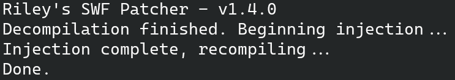
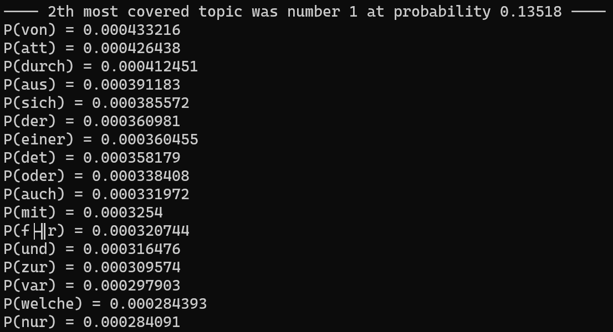
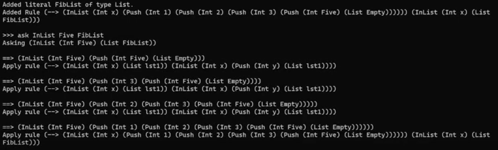
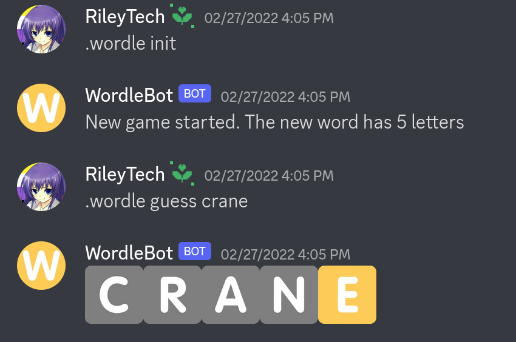

Coding Projects
You can find the vast majority of my coding projects on my GitHub. Here are the ones I'm most proud of and/or use most frequently.
Flash Patching Utility

This utility uses the simple Patchfile language to allow you to inject arbitrary ActionScript code into .swf files. Source code, instructions, and download.
Robust CNN training
I have done a significant amount of work on training machine learning models that are robust to noise, especially in the domain of computer vision. View the Jupyter Notebook, which contains both the code and results of some of my analyses.
APLSA

APLSA is an accelerated version of the PLSA machine learning algorithm, implemented for topic mining. My version uses C++ with OpenCL for GPU acceleration. View the source code and instructions.
RiLab

RiLab is a CPU multithreaded theorem proving software. Download the latest release here, or view the source code.
Wordle Discord Bot

This Discord bot uses short-term memory in order to play Wordle, but is otherwise stateless. If you're interested in self-hosting this application, you can view the source code and instructions.
Minecraft Computer
I have built a working computer in Minecraft: Bedrock Edition, based off of the MIPS ISA. This computer runs at about 0.04 Hz, with an instruction memory of 256 B and a register file of 252 B.
Miscellaneous Utilities
This GitHub page contains various utilities, and may be updated if I make new ones. As of the making of this website, you can find the following:
- Randomized music selection from local .mp3 files
- Recursive line counting utility, which is handy when your code is split across multiple files